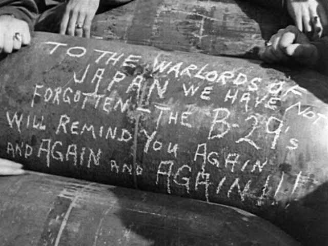
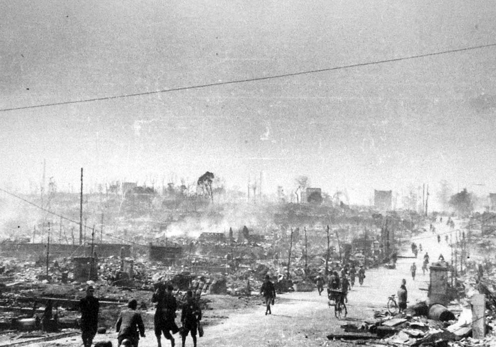
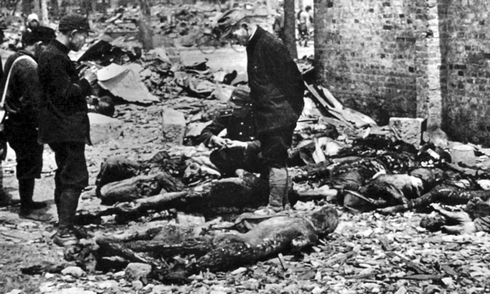

Operation Meetinghouse: The Strategic Air Campaign Against Japan
While atomic weaponry ultimately brought a definitive end to the Pacific War, the conventional strategic bombing campaign conducted by the United States Army Air Forces against Japanese urban centers caused unprecedented devastation in the final months of the conflict.

Shift to Low-Level Incendiary Raids
Under the command of General Curtis LeMay, American B-29 Superfortress bombers shifted tactics from high-altitude daytime precision bombing to low-level nighttime incendiary raids. Japanese cities, constructed largely of wood and paper residential blocks, proved exceptionally vulnerable to clustered M-69 incendiary bombs designed to start uncontrollable firestorms.

The Devastation of March 1945
The single most destructive bombing raid of the war occurred on the night of March 9–10, 1945, codenamed Operation Meetinghouse. Hundreds of B-29s dropped thousands of tons of incendiaries across downtown Tokyo, igniting a massive firestorm that consumed sixteen square miles of the city and claimed more lives in a single night than almost any other conventional bombardment in human history.
